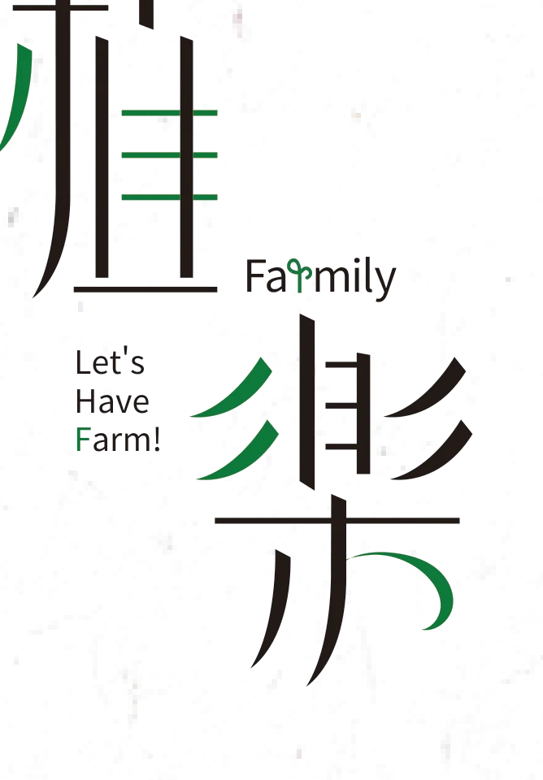
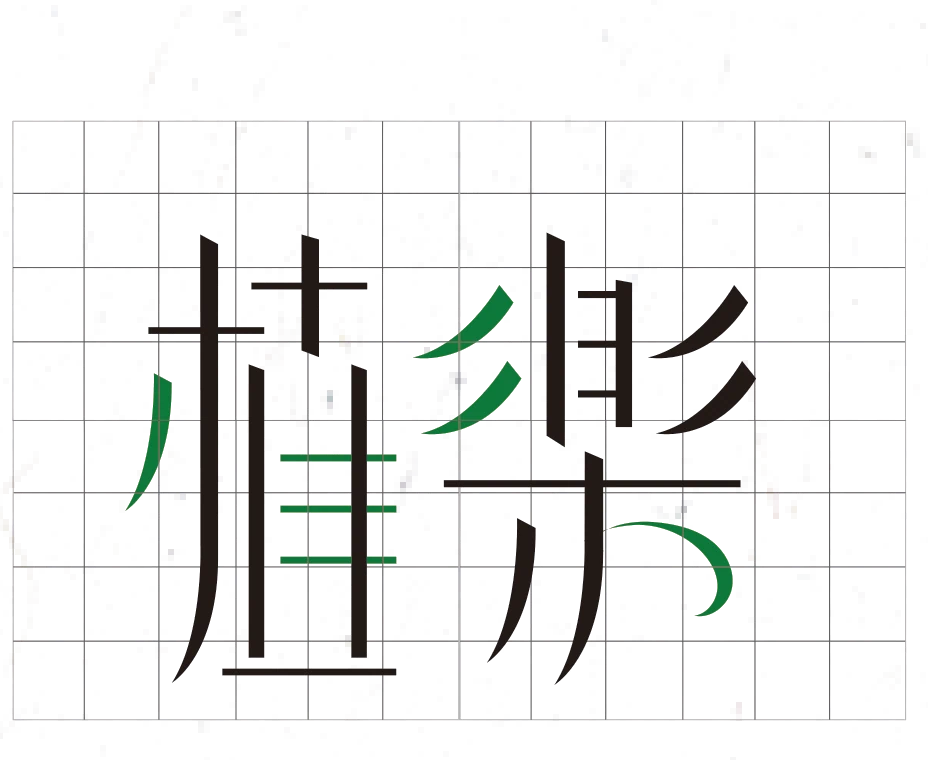

Service · Product
Let’s Have Farm! 植樂 Farmily
The way into this was dementia: going a long time without thinking things through makes it more likely. So the service is built around social contact and doing things by hand — keep people thinking, and the odds improve. 從失智症切入,了解到長期未思考將易導致症狀的發生, 因此我們將重心放在互動社交與動手實作的部分,希望使用者透過服務可以達到深入思考的效果, 降低失智症發生的機率。
- Type
- Service system design · Product design
- Goal
- 減緩失智機率,提供長者活動機會,增加交友互動
- Team
- Student project — 張喬筑、李淯錡、賴亭諭、郭俞均
- Advisors
- 鄭月秀、林聞賢

01
Brand 品牌

- #0C793B
- #F6D75C
- #E0E0E0